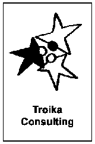

Troika Consulting
In breve - Troika Consulting è una Liberating Structure di consulenza tra pari in gruppi da tre: una persona porta una sfida (cliente), le altre due ascoltano e riflettono ad alta voce mentre il cliente gira le spalle. Poi ruotate i ruoli.
- Durata
- 30 minuti
- Difficoltà
- Facile
- Gruppo
- gruppi di 3 persone
- Fase
- Testare
Domanda da portare
- "Qual è la tua sfida in questo momento?"
- "Che tipo di aiuto ti serve dal gruppo?"
- "Come posso gestire meglio il conflitto nel mio team?"
Cosa ti serve
- Tre sedie a triangolo, senza tavolo in mezzo.
- Gruppi da tre con prospettive diverse se possibile.
- Post-it per annotare insight (opzionale).
I passaggi
Il cliente riflette da solo sulla domanda chiave
1 minIl cliente espone la sfida ai due consulenti
2 minI consulenti fanno solo domande di chiarimento
2 minIl cliente si gira di spalle (in remoto: muto e videocamera spenta); i consulenti discutono la situazione ad alta voce
3 minIl cliente si rivolge al gruppo e condivide cosa l'ha colpito
2 minRuotate i ruoli finche' ognuno ha fatto il giro da cliente
resto del tempo